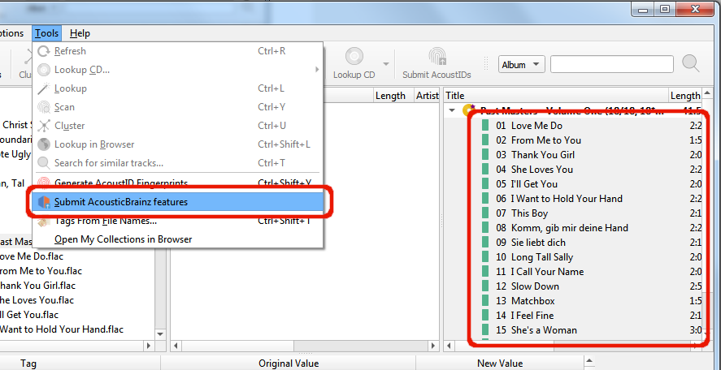

Soumettre des caractéristiques acoustiques¶
L’objectif déclaré du projet AcousticBrainz est de fournir aux chercheurs en technologie musicale et aux hackers open source une base de données massive d’informations sur la musique, dans l’espoir que cette base de données stimulera le développement de nouvelles recherches en technologie musicale et permettra aux hackers musicaux de créer de nouveaux moteurs de recommandation intéressants.
Ces informations acoustiques décrivent les caractéristiques acoustiques de la musique et comprennent des informations spectrales de bas niveau et des informations sur les genres, les ambiances, les tonalités, les gammes et bien plus encore. Vous pouvez soutenir cette initiative en extrayant les informations de vos fichiers musicaux et en les soumettant à la base de données AcousticBrainz.
Note
Toute l’extraction d’informations d’un fichier musical est effectuée sur votre système et seules ces informations sont envoyées à AcousticBrainz. Vos fichiers musicaux réels ne sont pas transmis.
Pour extraire les informations d’un fichier audio et les soumettre à AcousticBrainz, vous devez d’abord faire correspondre vos fichiers audio aux informations sur les sorties et les pistes de la base de données MusicBrainz et enregistrer les fichiers. Consultez les sections Récupération des informations sur l’album et Mise en correspondance des fichiers aux pistes pour plus d’informations sur la récupération des informations sur les versions et la correspondance entre les fichiers audio et les versions.
Une fois que les fichiers ont été appariés et sauvegardés, il suffit de sélectionner les pistes ou les versions que vous souhaitez soumettre et d’utiliser la commande « Soumettre les caractéristiques d’AcousticBrainz » dans la section « Outils » de la barre de menu principale de Picard. Si les fichiers sont correctement étiquetés avec les identifiants MusicBrainz et qu’une application d’extraction valide a été configurée dans le Paramètres des options AcousticBrainz, alors les fichiers seront ajoutés à une file d’attente où ils seront traités en arrière-plan.
{kind=link}
Si aucune application d’extraction valide n’est identifiée, ou si l’option « Extraction des caractéristiques d’AcousticBrainz » n’a pas été activée dans les paramètres des options d’AcousticBrainz, la commande « Soumettre les caractéristiques d’AcousticBrainz » ne sera pas disponible.